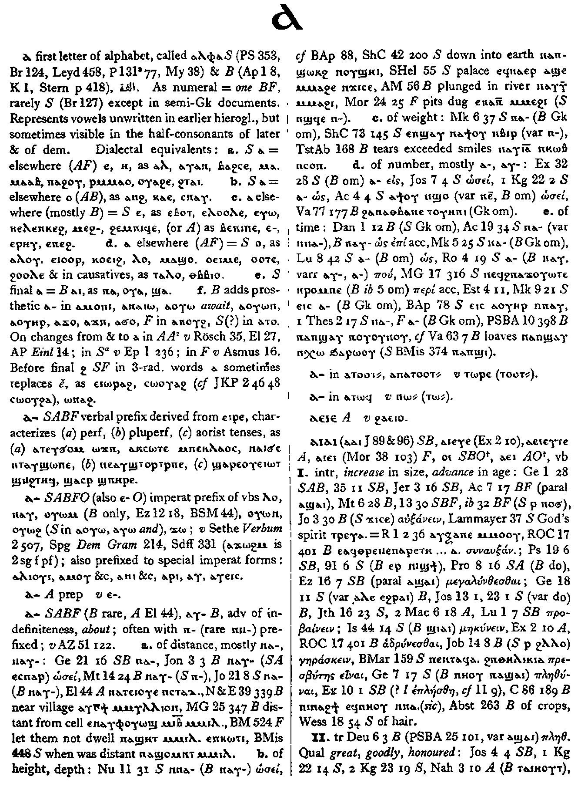

(verbal prefix)
verbal prefix derived from ⲉⲓⲣⲉ ,
characterizes (a) perfectum (b) plusquamperfectum (c) aorist tenses
(S, A, B, F)
ⲁ-
Opposite:
| view | (S, A, sA, B, F) ⲙⲡⲉ-, ⲙⲡ= | (verbal prefix) prefix neg 1
perf
― where action uncompleted, until S = εωσ αν ― with ⲁⲛ S,F ― with ⲡⲉ- neg pluperf S (rare)1083 |
Crum: 1

1
Dawoud: 1a

1